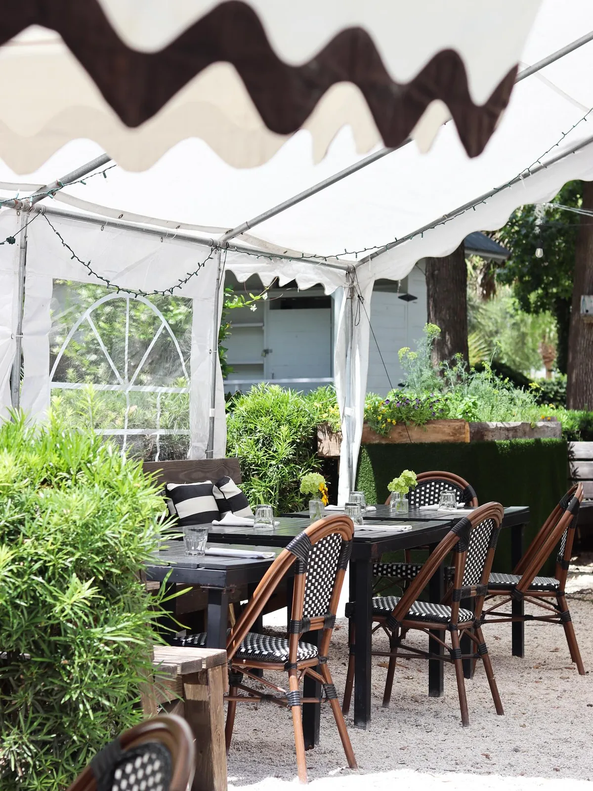
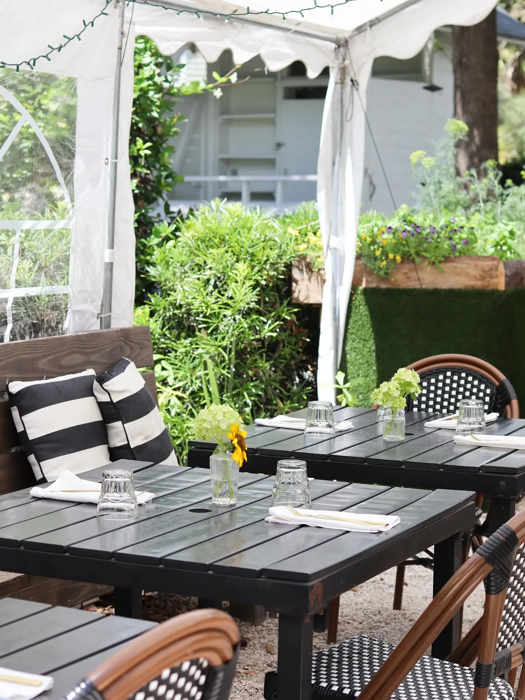
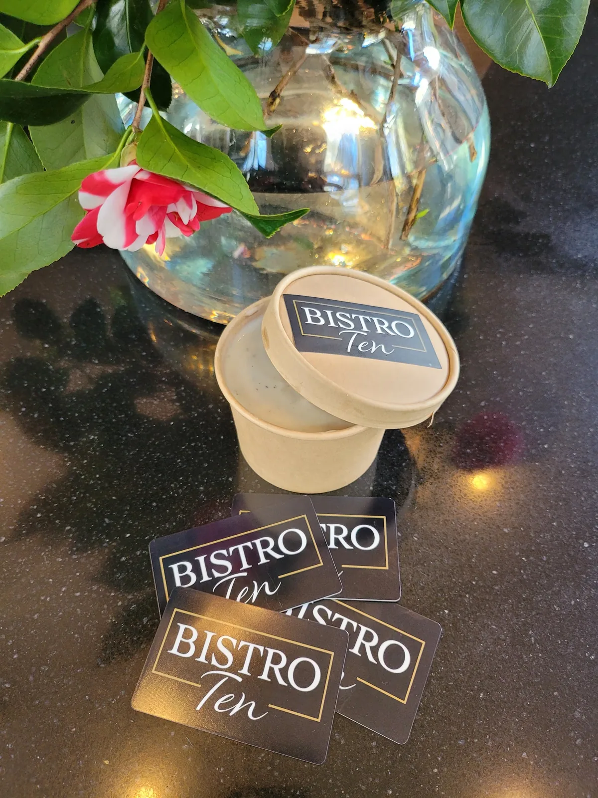
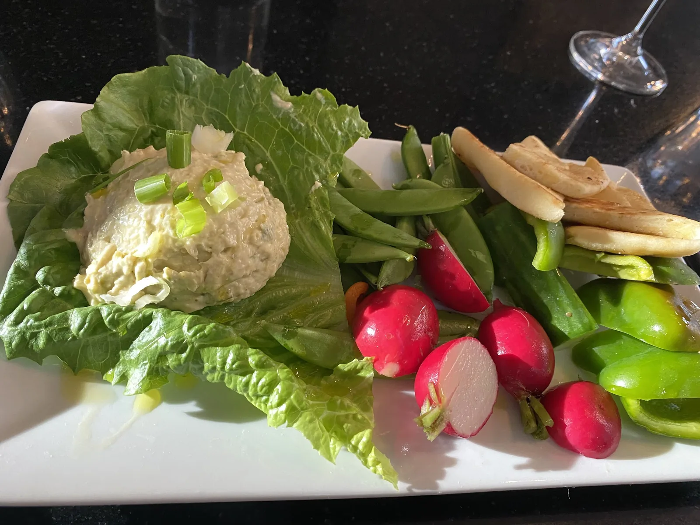
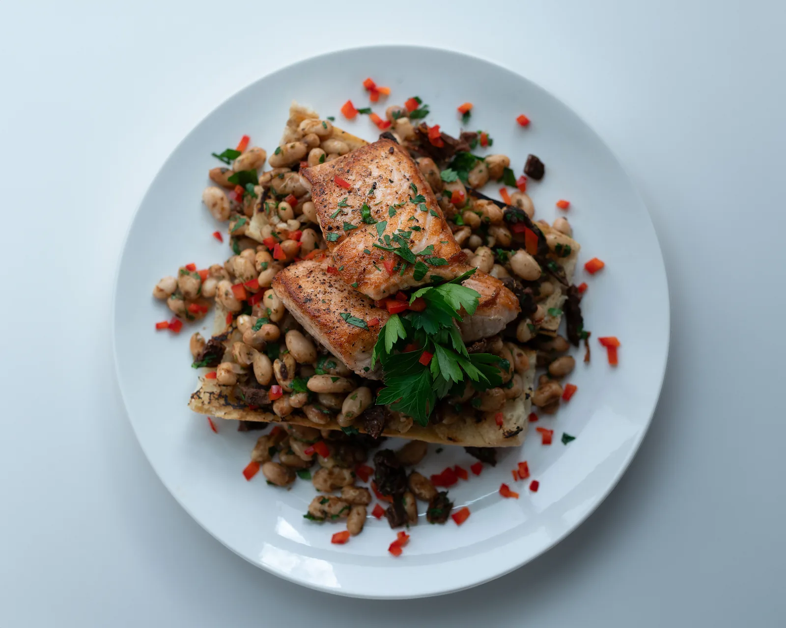
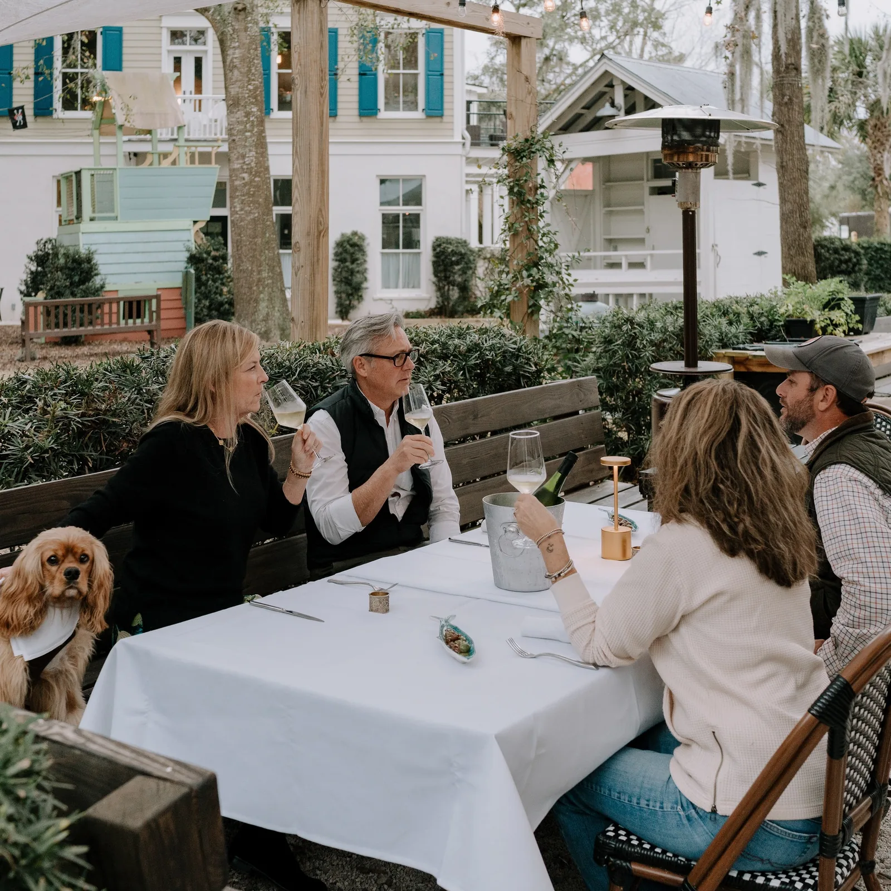
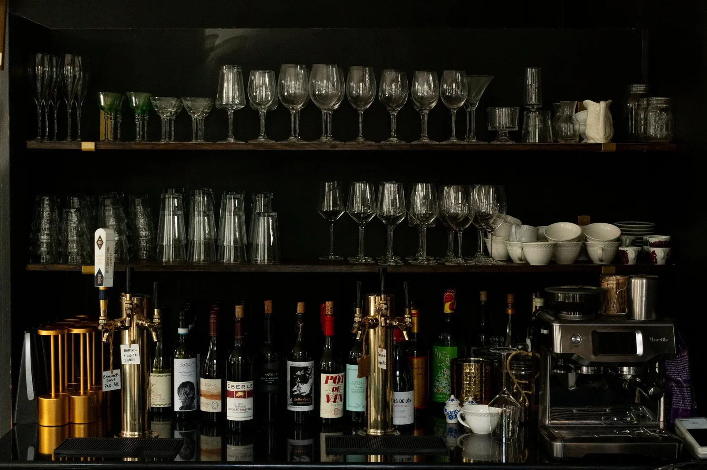
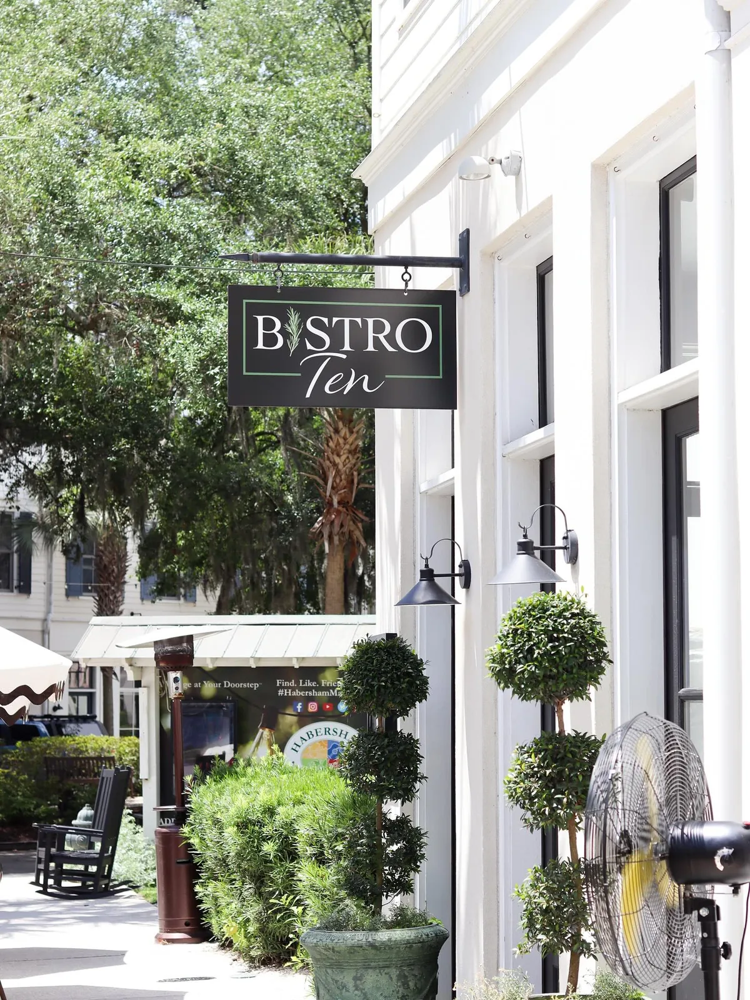

Garden to plate,
ten steps from
the beds.
Herbs from our own gardens, produce from the farms next door and shrimp straight off the local boats — served on the patio, under the oaks.


A quaint gathering spot for lunch, grazing & dinner.
Our commitment to environmental stewardship extends beyond the plate. We source shrimp directly from local fishermen, produce from the neighbouring farms, and herbs from our own gardens.
That’s not all — we celebrate and embody Lowcountry life with the warmth of community and joyous conversations. We invite you to join us for a true garden-to-plate experience in the heart of the Lowcountry.

Lunch
Boards, garden salads and handhelds — The Frenchman, L’Italiana, the Bistro BLT. Tuesday through Saturday, 11 to 3.
See the lunch menu
Dinner
A short card that changes with the garden, each dish printed with the wine we’d pour beside it. Wednesday through Saturday, 5 to 8.
See the dinner menu
Events
Wine dinners, cooking classes, oyster nights and Sunday Suppers — plus the room and the garden for your own celebration.
See what’s onThe shortest supply chain we know.
Raised beds run the length of the patio. Herbs, radishes and tomatoes come off them and onto the board the same day — and what we don’t grow comes from people we know by name.
Our own beds
Herbs and garden radishes grown in the planters that line the patio, a few steps from the pass.
Hardee Greens
Vertically farmed greens from Hardeeville, South Carolina — about an hour down the road.
Local boats
Shrimp bought directly from local fishermen. It shows up on the shrimp salad and the shrimp roll.
Lady’s Island Oysters
Our oyster nights are hosted with Julie Davis, the farm’s manager, who tells the story herself.
Let us host it while you enjoy it.
Graduations, bridal showers, engagement parties, rehearsal dinners, birthdays, baby showers — we love being part of the moments that matter most to you.
From garden gatherings to cosy candlelit dinners, we’ll take the whole evening off your hands. And when the party is somewhere else, our kitchen can come to you.


What guests say
“I have had some of the freshest farm to table meals with friends here. The owner is creative and has great passion in presenting a food experience with heart! The outdoor patio is an ideal atmosphere to meet friends.”Penelope Whichello
“Moved from Napa and difficult to find great farm to table dining experiences joined with genuine hospitality and service. Excellent from the moment we walk in and Melanie and Matt greet us!”Rena Robinson
“This is my favourite spot in all of the lowcountry. An ever changing menu focusing on seasonal and fresh ingredients and a team that’s completely dedicated to creating a memorable experience for every patron.”Jennifer Hewett

Wine, celebrated rather than merely understood.
Our handpicked selection showcases the world’s finest — from the vibrant vineyards of France to the sun-kissed slopes of California.
Whether you crave the sparkle of a Prosecco or the depth of a classic Rouge, our list is curated for connoisseurs and casual enthusiasts alike. Every dish on the dinner card is printed with the white and the red we’d pour beside it.
Two doors, one family.
Bistro Ten shares Habersham Marketplace with Criollo — Spanish and Latin American small plates in a dark, warm room at 9 Market. Same owners, entirely different evening.
10B Market, in the village of Habersham.
Ten minutes from downtown Beaufort, under the live oaks. Street parking is easy and the whole village is walkable — our sister restaurant Criollo is next door at 9 Market.
| Tuesday | Lunch only, 11am–3pm |
| Wed–Sat | Lunch 11am–3pm · Dinner 5pm–8pm |
| Sun & Mon | Closed |
